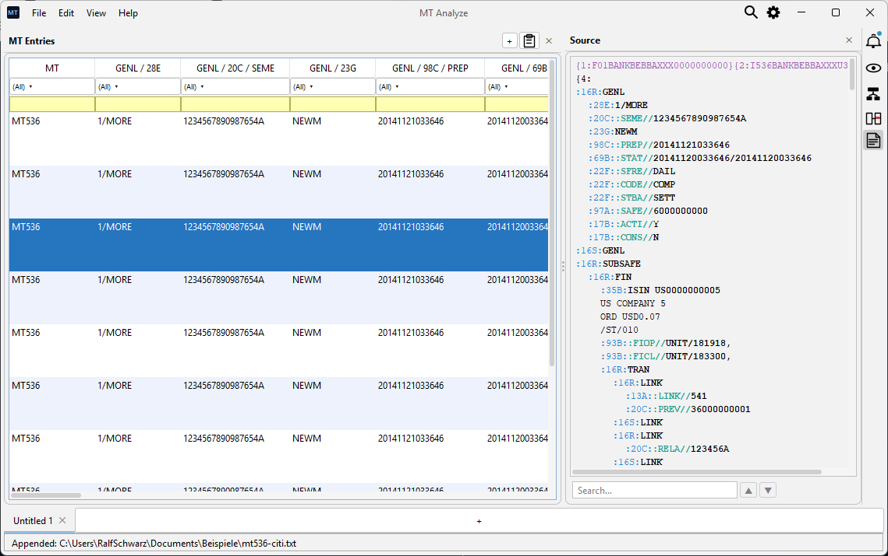

Wertpapierprozesse verstehen und weiterentwickeln
Sie möchten bestehende Abläufe nachvollziehen, Anforderungen präzisieren oder eine Systemablösung vorbereiten? Centerscout unterstützt Sie mit Business Analyse für die Wertpapierabwicklung (Settlement). Im Fokus stehen gewachsene Systemlandschaften und die Kommunikation über SWIFT MT.
01 — Leistungen
Vom Prozessverständnis zur klaren Anforderung
Veränderungen im Wertpapiergeschäft brauchen eine belastbare fachliche Grundlage. Centerscout analysiert Abläufe, Nachrichtenflüsse und Systemabhängigkeiten und übersetzt fachliche Anforderungen in Spezifikationen für die Entwicklung – vom Trade über die Settlement-Instruktion bis zur Buchung.
- Bestehende Prozesse analysieren und fachliche Zusammenhänge nachvollziehbar beschreiben
- Anforderungen konkretisieren und für Entwicklungsteams spezifizieren
- Schnittstellen und Nachrichtenflüsse untersuchen, mit Schwerpunkt auf SWIFT MT / ISO 15022
- Migrationen und Systemablösungen durch fachliche Analyse begleiten
- Fachliche und technische Fragen mit Fachbereich, Entwicklung und Architektur klären
Gewachsene Systeme verändern
In gewachsenen Systemlandschaften verteilen sich fachliche Regeln auf Anwendungen, Schnittstellen und Nachrichtenverarbeitung. Vor einer Änderung muss klar sein: Wie verhält sich das System tatsächlich, welche Abhängigkeiten bestehen und welche nachgelagerten Abläufe sind betroffen?
Centerscout unterstützt Sie dabei, diese Zusammenhänge zu erschließen und als Grundlage für Modernisierungen, Migrationen oder geänderte fachliche Vorgaben aufzubereiten. Dazu gehört auch, Wissen aus bestehenden Anwendungen und der Zusammenarbeit mit Spezialisten nachvollziehbar festzuhalten.
So entsteht eine gemeinsame Grundlage für fachliche Entscheidungen und die technische Umsetzung.
02 — Software
SWIFT-MT-Nachrichten unabhängig analysieren
Was steht in einer Nachricht? Welche Nachrichten gehören zu einem Geschäftsvorfall? Und wo unterscheiden sich ihre Inhalte? MT Analyze hilft Ihnen, SWIFT-MT-Nachrichten aus Dateien und Logs gemeinsam zu untersuchen.
Das von Centerscout entwickelte Desktop-Werkzeug bereitet Nachrichten als filterbare Tabellen auf. Damit lassen sich Inhalte außerhalb der erzeugenden Anwendung nachvollziehen, vergleichen und für die weitere Analyse nach Excel übernehmen.

Analyse außerhalb des Quellsystems
MT Analyze ist ein unabhängiges Open-Source-Desktop-Werkzeug für die Analyse von SWIFT-MT-Nachrichten.
- Nachrichten aus unterschiedlichen Dateien und Logs gemeinsam laden und untersuchen
- Gemischte MT-Nachrichten in einer einheitlichen, filterbaren Tabellenansicht
- Nachrichten vergleichen und über Referenzen entlang eines Geschäftsvorfalls verfolgen
- Hierarchische Nachrichten tabellarisch aufbereitet – bei einem MT536 etwa jeder Statement Entry als eigene Zeile
- Tabellen und Details direkt nach Excel übernehmen
Die Analyse der geladenen Dateien erfolgt vollständig lokal. Sobald Ihnen die Nachrichten als Dateien oder Logs vorliegen, benötigen Sie dafür weder eine Verbindung zum Quellsystem noch einen Server oder Cloud-Dienst.
Mehr über MT Analyze erfahren →
Einsatz und Erweiterung
Sie möchten MT Analyze im Team einsetzen oder für Ihr Projekt erweitern? Centerscout unterstützt Sie bei der Einführung, mit Workshops zur SWIFT-MT-Analyse und mit projektspezifischen Erweiterungen. Einsatzmöglichkeiten besprechen →
03 — Unternehmen
Über Centerscout
Die Centerscout GmbH ist ein IT-Beratungsunternehmen mit Sitz in Bensheim. Der fachliche Schwerpunkt liegt auf der Business Analyse für Wertpapierabwicklung und SWIFT-Kommunikation.
Centerscout verbindet die Analyse fachlicher Abläufe mit dem Blick auf ihre technische Umsetzung. Im Mittelpunkt steht die Frage, wie bestehende Systeme funktionieren und was für ihre Weiterentwicklung konkret benötigt wird.
Aus wiederkehrenden Analyseaufgaben entstehen eigene Werkzeuge wie MT Analyze. So ergänzt praktische Software die Arbeit im Projekt.
Welche Aufgabe steht in Ihrem Projekt an?
Ob Prozessanalyse, konkrete Anforderungen, Systemablösung oder der Einsatz von MT Analyze: Schildern Sie Ihre Ausgangslage und Ihr Ziel. Gemeinsam klären wir, wie Centerscout Sie unterstützen kann.